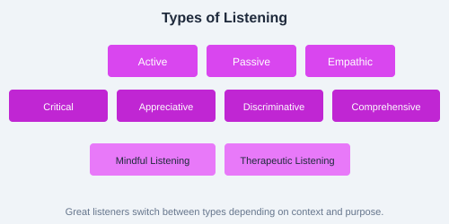

Listening is the most underrated communication skill. We spend about 45% of our time listening, yet most people remember only 25-50% of what they hear. Effective listening builds trust, reduces misunderstandings, and deepens relationships.
Types of Listening

Figure: Different listening types for different situations.
Active Listening  Fully concentrating, understanding, responding, and remembering
Empathic Listening  Understanding the speaker's emotions and perspective
Critical Listening  Evaluating messages for logic and validity
Appreciative Listening  Listening for enjoyment (music, stories)
Discriminative Listening  Detecting changes in tone, pitch, speed
Mindful Listening  Being fully present without judgment
Principles of Effective Listening
Be Present  Put away distractions, maintain eye contact
Don't Interrupt  Let the speaker finish their thoughts
Show Engagement  Nod, lean in, use verbal affirmations ("I see," "Go on")
Paraphrase & Summarize  "So what you're saying is..." to confirm understanding
Pseudolistening  Looking attentive while thinking about something else
Selective Listening  Only hearing what you want to hear
Defensive Listening  Taking comments as personal attacks
Misconceptions About Listening
"Listening is the same as hearing" (it's not  hearing is passive, listening is active)
"Good listeners are naturally quiet" (they ask great questions too)
"I can multitask while listening" (your brain cannot fully focus on both)
"Listening means agreeing" (understanding ≠agreement)
Practice Task: In your next three conversations, practice active listening deliberately. After each, write down: (1) Did I interrupt? (2) Did I paraphrase back? (3) What did I learn that I might have missed otherwise? Then try a "listening-only" exercise  spend 5 minutes letting someone talk while you only listen, without responding or asking questions.